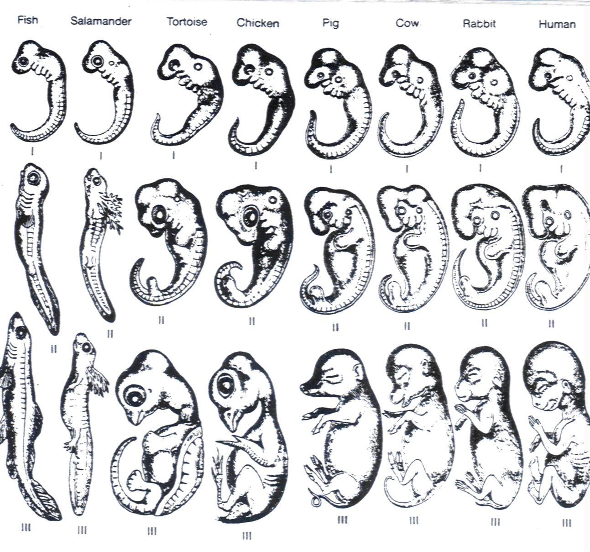

Embryo Comparisons

A comparison of
vertebrate embryos. Notice that all the above embryos
begin with
the same number of gill arches. Although a human
embryo does
not "recapitulate" the adult stage of any previous
ancestor,
certain ancestral conditions and particular structures are
clearly
recapitulated. This figure is from Mayr's book What Evolution Is.
According
to Mayr, "embryonic similarities, recapitulation, and
vestigial
structures . . . raise insurmountable difficulties for a
creationist
explanation, but are fully compatible with an evolutionary
explanation
based on common descent, variation, and selection." As
Mayr also
notes, if evolution is not true, "why should the embryos of
birds and
mammals develop gill slits, like fish embryos?"
Although Mayr uses Haeckel’s
original
drawings in his book,
he acknowledges that Haeckel’s famous claim that “ontogeny
recapitulates
phylogeny” is now known not to be true, because as noted above a
human
embryo
does not repeat the adult stage of any previous ancestor.
Creationists and supporters of Intelligent
Design will also make a big deal out of the fact that the
evolutionary
biologist Michael K. Richardson has shown that Haeckel’s original
drawings were
fudged and idealized to fit Haeckel’s more radical theory.
Haeckel made similarities appear more similar
than they are and he downplayed differences.
However, anti-evolutionists ignore that even Richardson has claimed,
“Haeckel's
much-criticized
embryo drawings are important as
phylogenetic hypotheses, teaching aids, and evidence for
evolution.” “Haeckel's ABC of
evolution and development.”
Biological Reviews, Cambridge
Philosophical Society. 2002 Nov; 77(4):495-528.
The embryos of birds and mammals
clearly
show gill-like
structures, more technically called pharyngeal arches.
Mayr is
not claiming that human embryos
actually have the gill slits of a fish.
Embryos of all vertebrates have deep structural similarities and
these
deep similarities are said to clearly show evidence for
evolutionary
relationships.